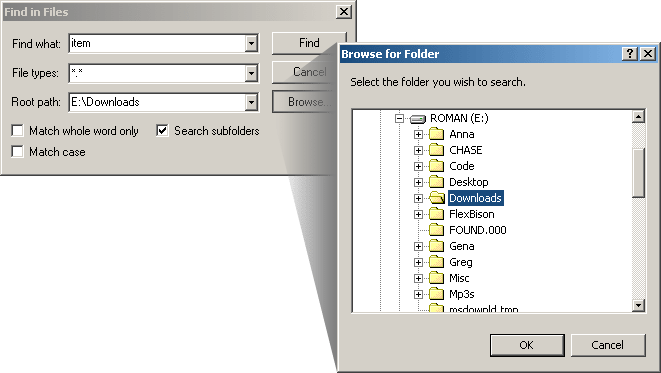

The Find in Files features allows the user to search for specified text inside files of specified folders. The user can set the File Types option to be the "File Types" filter for searching only desired files.
Check the "search Subfolders" option to perform a recursive search in the folders.
The "Match Whole Word" option searches for the text surrounded by whitespaces. "Match Case" performs a case-sensitive search.
Below is a screenshot of the Find in Files dialog:
